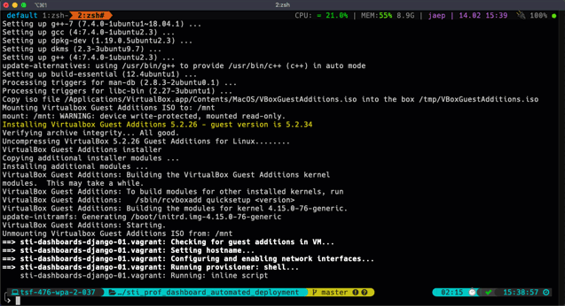

Vagrant¶
Vagrant is a great tool to automate the creattion of virtual machines.
Once you have VirtualBox and Vagrant installed on your machine, it is really quick and easy to create a new VM, manage snapshots of this machine, destroy it and start over.
Installation¶
VirtualBox can be found here: https://www.virtualbox.org/wiki/Downloads
Vagrant can be found here: https://www.vagrantup.com/
Usage¶
The Vagrantfile¶
Every aspects of your virtual machines are managed through a Vagrantfile
VAGRANTFILE_API_VERSION = "2"
Vagrant.require_version ">= 1.5.0"
Vagrant.configure(VAGRANTFILE_API_VERSION) do |config|
config.vm.box = "ubuntu/bionic64"
# Turn off shared folders
config.vm.synced_folder ".", "/vagrant", disabled: true
config.vm.provision "shell" do |s|
ssh_pub_key = File.readlines("#{Dir.home}/.ssh/id_rsa.pub").first.strip
s.inline = <<-SHELL
echo #{ssh_pub_key} >> /home/ubuntu/.ssh/authorized_keys
SHELL
end
config.vm.define "sti-cluster-node-01.vagrant" do |node4_config|
node4_config.vm.hostname = "sti-cluster-node-01.vagrant"
node4_config.vm.network :private_network, ip: "192.168.50.10"
end
end
Connect to your VM via SSH¶
You can either connect through the built-in command:
vagrant ssh
or via a regular ssh command:
ssh ubuntu@192.168.50.10
it may be useful to change you
~/.ssh/configfile to make sure the fingerprint of the server does not get recorded. It can become quite painful to re-edit your~/.ssh/known_hostsevery time your re-spawn a VM.
Host 192.168.50.* StrictHostKeyChecking no UserKnownHostsFile /dev/null
